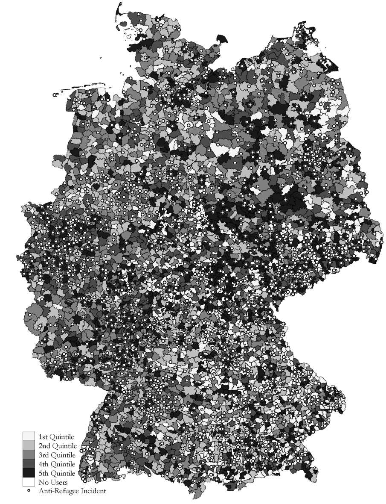
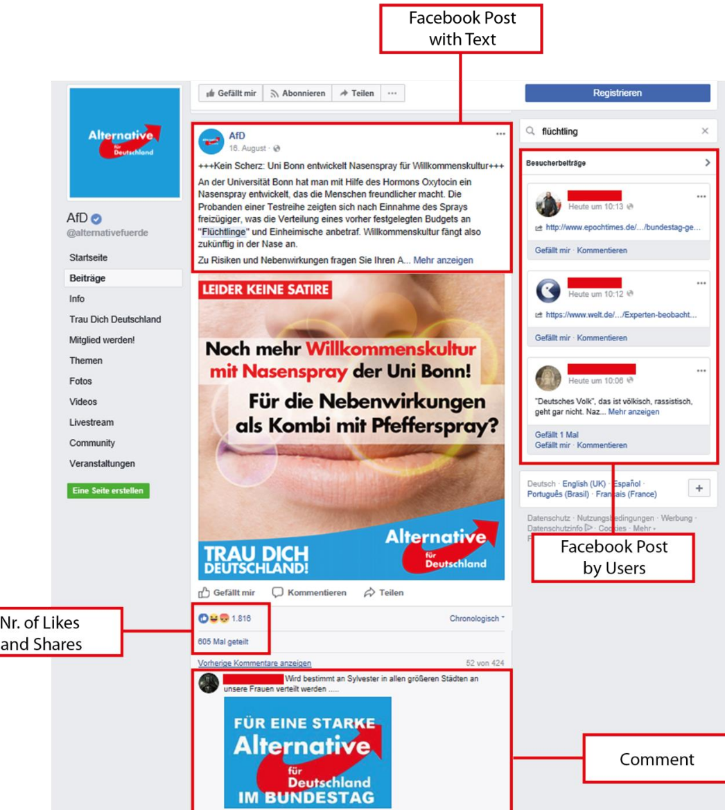
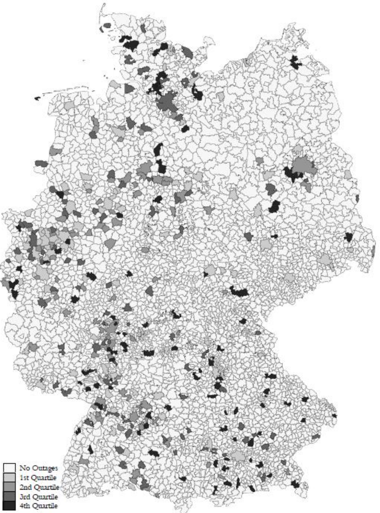

III. How and why do non-state actors use political violence?
Justin Leinaweaver (Fall 2025)
Müller & Schwarz (2021)
“Fanning the Flames of Hate: Social Media and Hate Crime”
Evaluate the Framing
Research question
Key concepts
Connections to the literature
What literature is the paper connected to?
What literature is the paper connected to?
Social media effects:
Hate speech and crimes
Polarization
Protests
Happiness
Political campaigns
Traditional media effects:
Violence
Ethnic hatred
“We show that anti-refugee sentiment on Facebook predicts crimes against refugees in otherwise similar municipalities with higher social media usage” (abstract)
Facebook Usage Increases Terrorism
Müller & Schwarz (2021)
“Fanning the Flames of Hate: Social Media and Hate Crime”
Research question → Literature
Literature + Intuition → Theory
Theory → Testable implications
Testable implications → Data
Müller & Schwarz (2021)
“Fanning the Flames of Hate: Social Media and Hate Crime”
Potential Mechanisms
Information Exchange
Persuasion
Coordination
Local Spillovers
Interests
Institutions
Interactions

Anti-Refugee Incidents
Source: Amadeu Antonio Foundation and Pro Asyl (pro asylum NGO)
All incidents geo-coded for location (municipality)
3,335 incidents (Jan 2015 - Feb 2017)

Facebook Data
Source: Facebook page for the AfD
93k individuals: 176k posts, 290k comments, 510k likes
Predictor 1: Anti-refugee sentiment
“Maybe there is a plot for German genes to be exterminated by the large streams of refugees. But what could be the reason, [revenge for] WW2?”
Facebook Data
Source: Facebook page for the AfD
93k individuals: 176k posts, 290k comments, 510k likes
Predictor 1: Anti-refugee sentiment
Predictor 2: Number of AfD users in municipality

Internet Outages
Internet Outages > 24 hours, wide impact (Source: Heise.de)
Facebook Outages: 8 weeks of major Facebook outages
old slides